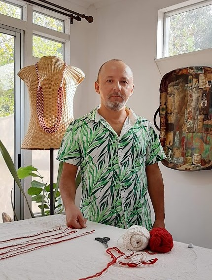

Bordado Urbano
Proyecto colaborativo en Calama (2012): los habitantes bordaron colectivamente un mapa de 3x2 metros con sus sueños, historias...
Ver proyectoBiografía, obra y gestión cultural desde San Vicente de Tagua Tagua hacia comunidades de Chile y Latinoamérica.
Max Sepúlveda nació en 1974 en San Vicente de Tagua Tagua, Chile.
Posee un vasto trabajo creativo y productivo en los oficios artesanales de alfarería, cerámica y textiles, poniendo en valor el diseño precolombino de forma contemporánea y experimentando con la fusión de técnicas. Su inspiración viene de los territorios y comunidades en donde crea sus obras individuales, talleres de transmisión de conocimientos y obras de arte colaborativas que nacen desde el diálogo comunitario: el artista y la comunidad reflexionan sobre su idiosincrasia, la memoria, la identidad, el patrimonio natural y cultural, los conflictos, las carencias y las abundancias de lo cotidiano. Desde ese encuentro comunitario afectivo co-crea obras de arte que visibilizan dichos tópicos como fuente de inspiración.
El artista concibe los oficios que comparte y al arte comunitario y colaborativo como poderosas herramientas de transformación social y personal. A través de los distintos procesos artísticos, Max busca generar conciencia sobre la importancia de la organización social, su empoderamiento, la creación de redes de apoyo, la autocrítica y la evaluación colectiva de errores y aciertos para contribuir a mejorar la calidad de vida.
Su formación ha sido con maestros artesanos y artistas visuales latinoamericanos. Es Técnico Profesional en Arte y Gestión Cultural del Instituto AIEP de la Universidad Andrés Bello de Santiago de Chile, cursó un Diplomado en Formación Pedagógica para Artesanos en la Universidad Metropolitana de Ciencias de la Educación de Santiago de Chile y realizó una Pasantía en Arte Textil en la Universidad Iberoamericana de Ciudad de México, entre otros estudios.

Hitos y proyectos clave en más de 20 años de carrera artística.
Exposición individual de alfarería en el Museo Escolar Laguna de Tagua Tagua y co-autoría en el libro histórico y patrimonial sobre la cuenca del río Tinguiririca.
Se titula de Técnico de Nivel Superior en Arte y Gestión Cultural y realiza talleres y co-creaciones de murales textiles colaborativos en Oaxaca y Morelos, México.
Dirección e impartición del taller de bordado tradicional y exposición colectiva en San Pedro de Atacama y Santiago en colaboración con la comunidad y SQM.
Homenaje por su aporte al desarrollo cultural local en el marco del Día del Artesano. Más de 25 años dedicados al arte colaborativo y la gestión cultural.
Seleccionado nacional para el catálogo del Ministerio de las Culturas que reconoce a artesanos con destacada trayectoria y oficio durante la emergencia sanitaria.
Adapta su labor al formato virtual durante la pandemia. Cápsulas de formación en bordado y arpillera para comunidades, reconociendo buenas prácticas de mediación.
Presenta creaciones de moda textil con identidad chilena en la semana de la moda de Costa Rica, integrando artesanía tradicional en el diseño contemporáneo.
Exposición individual 'Textiles y Alfarería del Tagua Tagua' en la School of Art de Dunedin. Intercambio cultural con la tradición maorí.
Residencia de arte colaborativo en el Valle de Alicahue, Región de Valparaíso. Trabajo con comunidades locales en intervenciones artísticas territoriales.
Ganador de los Fondos Concursables para la Cultura del MEC uruguayo. Mapa textil colectivo de la costa de Rocha, Uruguay.
Intervención de arte público colaborativo. Mapa textil de 3×2 metros bordado por más de un centenar de habitantes de Calama.
Fondo del Ministerio de las Culturas, las Artes y el Patrimonio de Chile para crear y producir 22 piezas de alfarería que ponen en valor el método ancestral Tagua Tagua. Itinerancia por 10 centros culturales de la Región de O'Higgins y posteriormente Nueva Zelanda.
Participa en proyecto de creación artística en Valdivia, financiado por Fondart Regional de Los Ríos. Primer acercamiento al cruce entre artesanía y artes visuales.
Vincular a la comunidad desde la sensibilidad, generando lazos que van más allá de lo cotidiano. El arte comunitario y colaborativo es una herramienta de transformación social.
La práctica de Max cruza cerámica, alfarería, bordado, telar, batik, pintura en seda y dirección de arte audiovisual. Su lenguaje mezcla oficios tradicionales, memoria local y experimentación material para construir relatos visuales con fuerte contenido social.
Muchas de sus obras nacen de procesos participativos: artista y comunidad reflexionan sobre el territorio, sus problemáticas e identidad, y desde ese diálogo co-crean piezas que visibilizan patrimonio, historias y vínculos afectivos.
A lo largo de su trayectoria ha realizado talleres, seminarios, residencias y exposiciones en distintas regiones de Chile y en países como Uruguay, Costa Rica, México y Nueva Zelanda. Su trabajo ha llegado a espacios comunitarios, museos, escuelas de arte y programas públicos de formación.
Como gestor cultural, impulsa proyectos que empoderan a las comunidades y dejan capacidades instaladas: rescate patrimonial, formación en oficios, mediación artística y creación colaborativa. Ha trabajado con instituciones como el Museo Violeta Parra, la Fundación Superación de la Pobreza y programas como Red Cultura.

La obra de Max ha trascendido su territorio de origen mediante exposiciones, residencias y colaboraciones en distintos países. Ha desarrollado proyectos y muestras en Uruguay, Costa Rica, México y Nueva Zelanda, además de compartir su trabajo en diversas regiones de Chile.
Ese recorrido internacional no aparece como una expansión desligada de lo local, sino como una forma de tender puentes entre culturas, oficios y memorias. En cada contexto, su práctica dialoga con comunidades, saberes artesanales y símbolos territoriales para construir procesos de intercambio y co-creación.
Su objetivo es visibilizar, valorar, proteger y revitalizar las identidades locales a través del arte.
Entre los hitos más significativos de su trayectoria se encuentran el proyecto Widüfe Kuyfiche - Alfarero Ancestral, financiado por el Ministerio de las Culturas, las Artes y el Patrimonio de Chile; el desarrollo de Bordado Urbano en Calama; y el proyecto Bordado Charrúa de la Memoria, reconocido por los Fondos Concursables para la Cultura del Uruguay.
También destacan su residencia y exposición en la School of Art de Dunedin, Nueva Zelanda, su participación en Costa Rica Fashion Week y su trabajo sostenido de mediación artística y formación de oficios en espacios comunitarios e institucionales.
Su trabajo también ha circulado en documentales, entrevistas y publicaciones especializadas que profundizan en el cruce entre arte, oficio y comunidad.
Espacios públicos, privados, educativos y comunitarios con los que ha trabajado o colaborado.
Red de espacios culturales, museos, medios, instituciones educativas y comunidades vinculadas a su trayectoria.
Reconocimientos institucionales y selecciones relevantes.
Selección cronológica de exposiciones individuales y colectivas.
Selección
Una selección de obras y procesos colaborativos representativos de su trayectoria.
Proyecto colaborativo en Calama (2012): los habitantes bordaron colectivamente un mapa de 3x2 metros con sus sueños, historias...
Ver proyecto
Proyecto colaborativo de Max Sepúlveda y el colectivo Cine del Cono Sur en cinco balnearios de Rocha, Uruguay...
Ver proyecto
Residencia artística en la Escuela de Arte del Instituto Politécnico de Dunedin, Nueva Zelanda (2018), con exposición individual,...
Ver proyecto
Creación de 22 piezas de alfarería que ponen en valor el método ancestral Tagua Tagua. Proyecto financiado por...
Ver proyecto
Registro fotográfico de murales textiles colaborativos realizados por Max Sepúlveda junto a comunidades locales.
Ver proyecto
Residencia del programa Red Cultura en la Región de Valparaíso (2016), trabajando con comunidades locales.
Ver proyecto
Invitación a exponer sus obras y las de la Cooperativa Textil Tagua Tagua en Costa Rica Fashion Week...
Ver proyectoContacto para contratar sus servicios, colaboraciones y voluntariados.